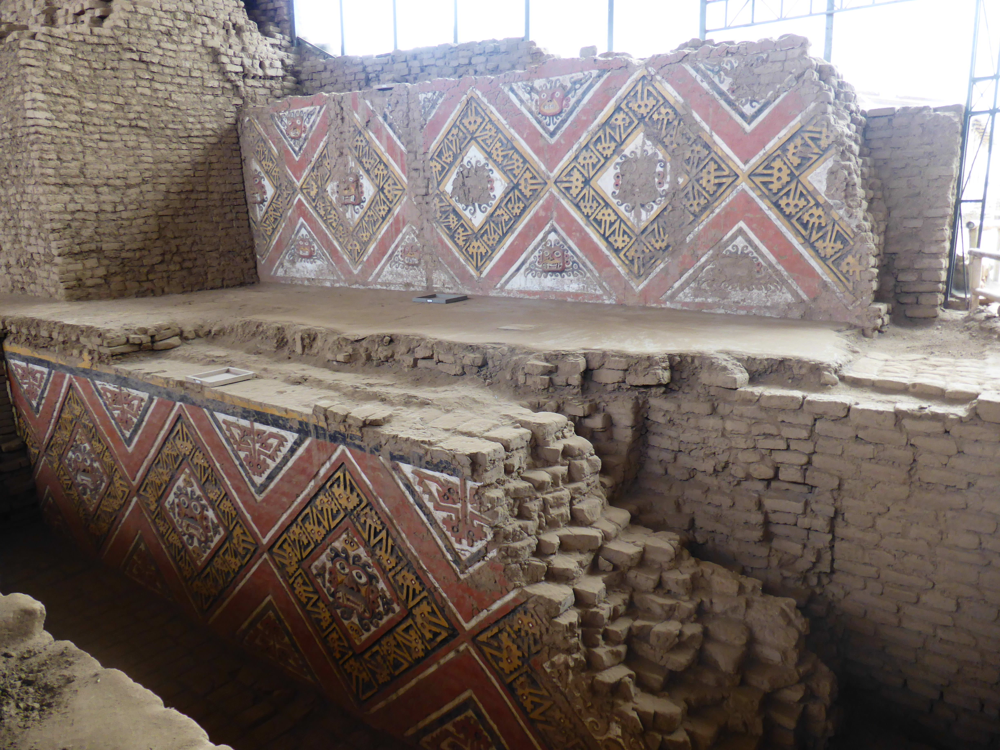
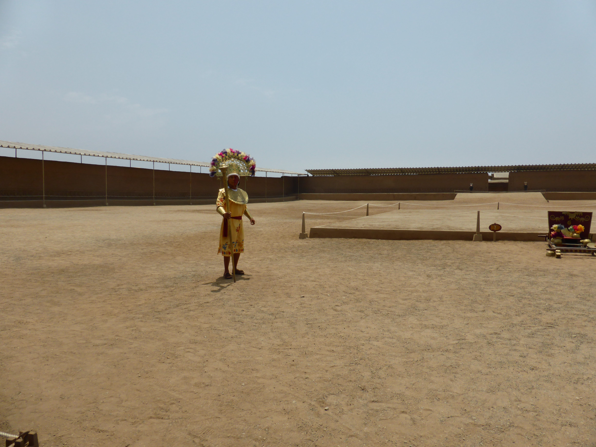
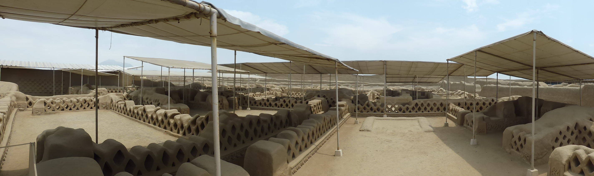
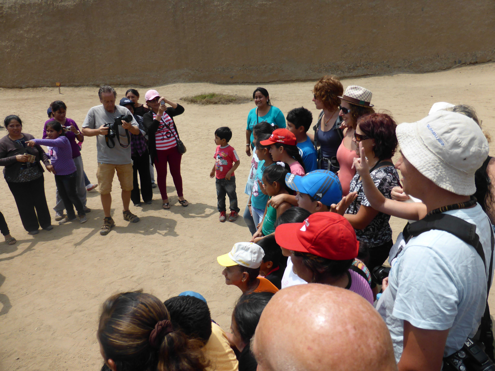
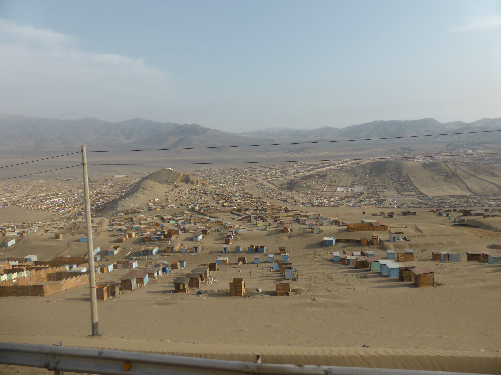
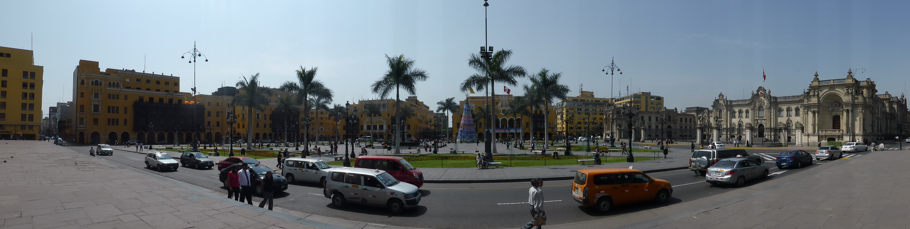
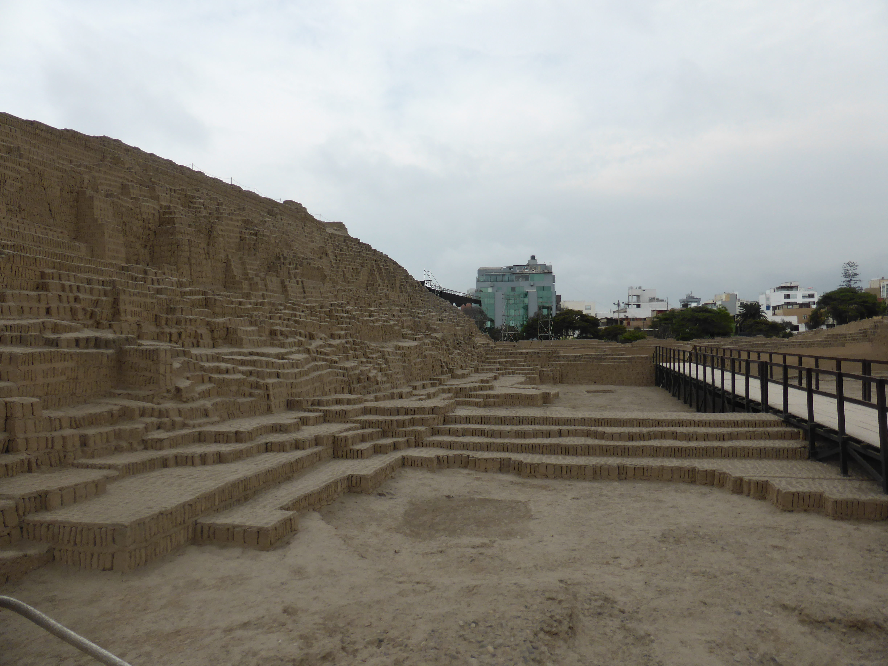

South America, Part 6
Jan. 12, 2014
From Punta Sal we took a long driving down to Huanchaco, via a stop off at the Lord of Saipan museum. The lord of Saipan is a Moche mummy found dressed in all manner of gold and surrounded by artefacts and other sacrifices (including other humans and decapitated llamas). The tour took a while to get going (our guide was late) but the exhibition was so amazing (the pieces were painstakingly restored in Germany) that it was hugely enjoyable. The diorama at the end featuring moving animatronic waxworks of Moche people was extremely weird though.
The continuation of the journey to Hunchaco took until after dark and we had to pitch our tents under flood lights. After that we went out for enormous pizzas at a bar next door to the camp site and my fellow tour mates also took advantage of some rather well priced (and strong!) cocktails. I stuck to Sprite! The camp site at Huanchaco was small but I had a nice pitch and the toilets and showers were clean. I had a cold water shave that night (using my phone´s front facing camera as a mirror) and a nice warm shower the following morning.
There´s not much to see at Huanchaco, it´s a bit of a gringo trap with bars and restaurants for people who don´t really like the look of nearby Trujillo. In the morning we took a trip through Trujillo to the temple of the sun and the temple of the moon. These two Moche structures from around 5-900AD are the most complete remains of a city complex that was discovered after the El Nino rains in 1987. The temple of the sun is currently closed for restoration but the temple of the moon was spectacular, a fantastic Russian Doll structure that the Moche would just bury and build on top of every hundred years. The layers are well preserved and show evidence of ongoing human sacrifice, until the whole civilisation collapsed (probably due to El Nino too) around 900AD.

And where did the Moche people go? Well, they became the Chimu and built a massive mud city on the other side of what is today Trujillo. That city was called Chan Chan and spanned over 200 square kilometres by the 1100s. Learning about Chan Chan was pretty much what made me want to come to South America and how I found this Tucan trip going all the way around the continent. Most of Chan Chan is washed away and gone now, either built upon (as lost cities often are) or just left as a bare expanse of potential archeological exploration roved over by morning mists, stray dogs and abandoned plastic bags.
However, there is one spectacular site that remains - the palace of one of Chan Chan´s final ruler kings (immature side note: “this palace was for one king” sounds unfortunately like something else when said with a Spanish accent), of which there were many. These palaces were built by each king during their lifetimes with the specific aim of storing their mummy after they died. The entire palace was devoted to display of the king´s mummy each year on the anniversary of their death, a tradition that persisted for a long time in other later South American cultures too. It would have had walls two metres tall and would have looked awesome in its day, especially given how it does even now after centuries of erosion. I liked it so much I bought the T-shirt! Even better was how our tour party was mobbed by a group of Peruvian school children who wanted only to pose with us for pictures! It took us about half an hour to leave. Naturally I took my new responsibilities seriously and told them to recognise the importance of their education, the value of socialised medicine and their duty to elect left wing governments when they were older!



The next day we left at 6am for Peru´s capital Lima. Again we stopped off at an archeological site but it was less interesting than the others we had previously visited (quite disappointing really) and was only remarkable for the fact that we had lunch there too.
Lima seems to sprawl even more than Quito does. From about 10km out you start to see shanty towns and they are strikingly well organised for all the chaos that the phrase evokes. We passed places where the rudimentary houses (little more than beach huts=) were yet to be built and there was evidence that power and water were already in place - all people had to do was to move in and take their plot. I found myself wondering a lot about what life must be like for those people, to be so poor and live so close to the wealth of the capital. Obviously I had no chance to wander those streets as everyone tells you that it is not safe - I wonder whether it´s not more likely to be the case that the powers-that-be aren´t more than a little ashamed of the situation and don´t want you to be aware of it (and of course, the dubious touristification of poverty - tours of favelas in Rio et al - is another thing to consider).

Beyond the shanty towns and at the interior of Lima, a bright and beautiful colonial city awaits. The food and the bars didn´t strike me as anything special, but there were nice churches and busy streets to explore. On the second full day Lee and I took the Metro down to a suburb called Miraflores and there, for the first time on the tour, we could have been back in Europe. This was perhaps the starkest evocation of the social and economic inequality in Peru (and elsewhere in South America). It was one thing to drive through towns where people were burning trash at the edge of town but quite another to find somewhere just like Europe. Sometimes we “forgive” extreme poverty because we have that post-colonial first world thought that “they can´t do any better” - Miraflores was a lovely day out but it made me uncomfortable because clearly some people in Peru have a very high standard of living just miles from people in shanty towns.



Next up is part 7, where a lot happens - even without me getting sick.